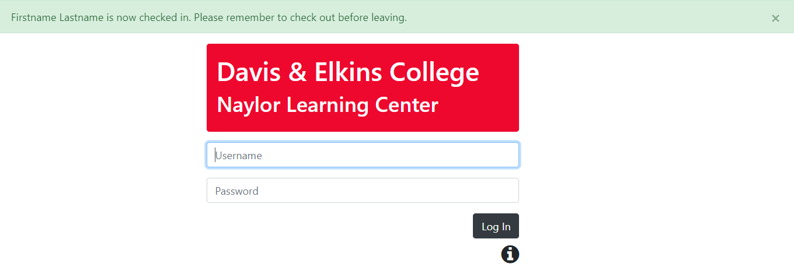

Hello, GlobalGiving!
I've thrown together this page to provide some context for the work that I have to show you.
For many years, I have been coding for classroom purposes, and rarely for production. As a result, the work that I can show you may not be an excellent match for the specific Front End Developer skills that you have listed. In addition, some of the work is not mine alone, but collaborative work with students.
Still, I think I can illustrate my ability to solve problems with HTML, CSS, and JS.
My CSS skills
This page is also my best opportunity to show you what I can do with CSS.
Most of the academic work that I have to show you pays minimal attention to styling. Where there is more styling, the actual design decisions are mostly the work of students.
I have no particular expertise in choosing fonts, colors, layouts, etc. So, on this page I have adapted a CSS site template from w3schools to show that I am adept at applying existing CSS designs to Web content. I am also skilled with the CSS syntax for expressing design decisions.
Browser games for intro programming
I wanted novice programmers to do something fun in the browser, but focus on fundamentals and OOP without getting into HTML and DOM details. So, I built a simplified wrapper around a popular JS game framework, and created game programming assignments.
Finished copies of the game assignments are presented below. Click each link to enjoy the gameplay, but please keep in mind:
- you are not seeing the full course materials, which introduce the games, explain gameplay, etc., and
- the JavaScript is obfuscated, because these are course assignment solutions. (I would be happy to share the private solutions repository with anyone at GlobalGiving. Just contact me with GitHub credentials.)
Stranger Hunt is the students' first game. Score points when you click the mysterious stranger. Lose points when you click the old wizard Marcus. Game over when you click Princess Ann.

In Wizards' Duel you play as Marcus. Dodge your opponent's spells with the up and down arrows. Cast spells with the space bar.
In Platform Princess you play as Princess Ann. Use horizontal arrows and space bar to reach the exit door.

Puzzled Princess has students build the unbeatable TicTacToe program in a drag-and-drop format.
DevOps and the attendance tracking app
Students in my Professional Experience course sequence run a "company" called DevOps. You can learn more about the company and courses at our site's homepage.
We also use that site to deploy and operate our one production system: an attendance tracking app for the campus learning center. Similar to a punch clock, the system records the duration of student visits to the campus learning center.
Users of the app must authenticate against the campus Active Directory server, which our code consults via LDAP. Because of this and the privacy requirements concerning system data, I cannot provide you with access to the running system. I can point you to the GitHub repo for version 2.0.0, a Sails-based rewrite that we plan to deploy the first week in January.
Here you can see a UI improvement introduced in version 2 of the attendance app. The effect is similar to elements of GitHub's UI. However, we have added CSS animation to support the "time clock" nature of our app.
These before-and-after images show the response when a user has walked up to an attendance tracking station, authenticated, and POSTed a few details to "check in" at the start of their visit.

In early Web fashion, version 1 POST requests lead to "dead end" response pages that served only to communicate the POST's results to the user.

Using W3.CSS, Version 2 communicates these results via a banner that appears at the top of a useful page. In this case, CSS animation is used to fade out the banner after the user has time to read it.
Implementing a programming language
This program is entirely browser based. It shows third-semester students some approaches to implementing a very simple "programming" language. For them, it is a clinic in object-oriented design and delegation.
I'm showing it to you as an indication of what I can do with client-side JavaScript. Although it's mostly behind-the-scenes computation, there is a certain amount of DOM manipulation for the user interface.
I think it might be interesting to apply a front-end framework like React to this, but haven't found the time.
My GitHub profile
Finally, check out my GitHub profile and feel free to send me questions about anything you see that interests you.
Thank you!
Thanks for taking the time to look at my work. I'm very excited to work at GlobalGiving, and I hope to hear from you soon.
I was annoyed that the online job application form did not allow paragraph breaks in responses.
I have duplicated my responses here, in a more legible form.
Cover letter
There are two main reasons that I want to work at GlobalGiving. The first is code. I am happiest when I'm immersed in code-- designing, writing, testing, debugging, fixing. When people ask me what I do for fun, I tell them my fun looks a lot like my work.
The second reason is meaning. I enjoy code for code's sake but I would prefer that it be useful to someone. I've written code that I consider useful. But until now, I've never seen an opportunity to work on code that would directly contribute to meeting basic human needs for food, clothing, and shelter. I can't pass that up, and I can't stop thinking about how rewarding that would feel.
Reading the job requirements, I see that you are looking for candidates with 3+ years of relevant experience. I'd like to use the rest of this "cover letter" to address that, and explain why I think GlobalGiving wants to hire me.
You could argue that I'm "overqualified", with seventeen years of experience in software development and management, followed by another fourteen years teaching college computer science. But I am happy with your job description's salary range, the remote option is attractive and makes it feasible for me to take the job, and I am absolutely fired up by the thought of any code-oriented role with GlobalGiving.
On the other hand, you could argue that I'm "underqualified" with respect to some specific skills listed for the job. Although I build and operate Web-based systems with and for my students, the client code is mostly plain vanilla JS, the CSS is pretty simple, and cross-browser techniques are limited to polyfills plus rigorously validated markup. All pretty basic, but I can and will learn anything related to code and Web technologies. I'll learn it quickly, well, and with a great deal of independence. And I'll love every minute of it.
Finally, I have great strengths with respect to some of the "process oriented" aspects of the job description. The Professional Experience courses that I teach draw on my experience outside of the classroom to emphasize organizational and process concepts as much as technical ones (see https://dewv.net/). Our DevOps organization onboards new "staff" every semester, covering git/GitHub workflows, bug tracking, Scrum, Travis CI, Grunt automation, and a server stack that has evolved to include Node, Express, Sails, EJS, and MySQL.
I hope I have convinced you to contact me.
Thanks,
Steve Mattingly
Changes to globalgiving.org
When I work on a site, I tend to be most interested in the JavaScript. However, since I'm not going to try to deminify your JavaScript, I'll share what I see in some other areas.
When I work on a site, I tend to be most interested in the JavaScript. However, since I'm not going to try to deminify your JavaScript, I'll share what I see in some other areas.
First, I would work to make the GlobalGiving site compliant with W3C standards. Correcting issues like those identified at https://validator.w3.org/nu/?doc=https%3A%2F%2Fwww.globalgiving.org%2F would make the site more accessible to all users, and better supported by all browsers.
Next, I would suggest redesigning the site features that use hover menus, eliminating the hover activation in favor of a click menu or other alternative. While exploring the site, I genuinely had navigation trouble due to this: difficulty accessing top menu items like "About Us" because my mouse passed over "Explore Projects," popping up a menu I did not want. The large size of the menu exacerbates the problem, making it inconvenient to mouse out of the menu to deactivate it. The filter menus on https://www.globalgiving.org/search/ have similar problems; the Country filter menu is particularly aggravating because it doesn't always deactivate when it should.
Finally, there is a 404 returned for https://www.globalgiving.org/img/giftCards/banner_left_sm.jpg. The broswer GETs this URL for some smaller screen clients. While the fix for that error is likely trivial, I would look for a systematic way to ensure that all existing errors of this type are found, and all future ones are prevented from going into production.
Tell us a story
One anniversary, my wife and I stayed at a bed-and-breakfast in western Pennsylvania. Driving there, we passed signs for Frank Lloyd Wright's Fallingwater. My wife loves architecture, and Fallingwater is one of the Lego architecture series that she displays in our home.
She suggested that we try to tour the house. I told her I had checked but there were no tours "currently" running. But, I revealed, we had tickets for Kentuck Knob, another of Wright's nearby designs. This cheered her, and the tour was a bigger hit than I expected. Afterwards, she was still excited, and suggested a future trip to see Fallingwater.
I then revealed that there were no tours of Fallingwater that day, but we had tickets for the first tour the following day. She enjoyed Fallingwater even more, and started reading more about Wright and other home designers. Recently, she surprised everyone with her plans to begin another degree in architecture.
Favorite project
My favorite is Project #18728, Long-Term Food Security for 4000 Samburus in Kenya.
I chose this project because it meets two criteria that I value in charitable projects.
- It is addressing basic human survival needs like food, water, clothing, or shelter.
- It emphasizes sustainable solutions that make people and communities more self-sufficient.